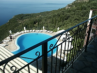
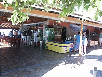
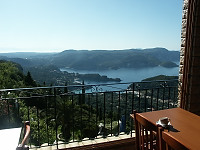
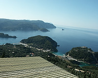

Another bus tour---this time in beautiful Corfu |

On Corfu, Greece. |

Beautiful pool in a breathtaking setting. |

Small cafe for snacks and refreshments. |
|

A cafe for snacks and refreshments. |

Around the snack bar--- typical countryside |

There are many heights in Corfu which produce beautiful vistas. |

Corfu is the principal island of a group of seven islands, five of which are inhabited. |

|

Corfu has been inhabited since the 7th century B.C.E. |

A rather minimal snack bar. |

The problem with bus tours is you always stop at some snack bar instead of seeing some interesting things. |